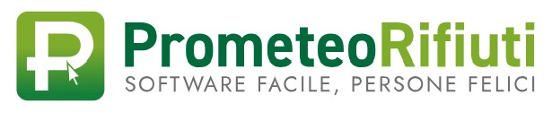

Moduli & Portali Rifiuti
Seleziona il servizio operativo per la tracciabilità, la gestione dei depositi temporanei e la modulistica di cantiere.
ReNTRi
Accesso al Registro Elettronico Nazionale per la Tracciabilità dei Rifiuti per operatori e gestori di cantiere.
Accedi al portale ReNTRi

Prometeo Rifiuti
Piattaforma software per la gestione semplificata dei registri di carico e scarico e formulari.
Apri Prometeo Rifiuti
Campionamento Rifiuti
Modulistica e procedure operative per l'esecuzione dei campionamenti e caratterizzazione dei rifiuti di cantiere.
Apri Modulo Campionamento
REGISTRO DEI CAMPIONAMENTI / RdP
Consultazione dello storico dei Rapporti di Prova (RdP), catene di custodia e tracciabilità analitica dei lotti.
Consulta Registro RdP